Next: ตัวอย่าง:
Up: แบบจำลองมาร์คอฟ (ต่อ)
Previous: การเปรียบเทียบค่าความน่าเชื่อถือระหว่างระบบเดี่ยว กับระบบ TMR
Contents
Index
แบบจำลองความสามารถในการคงการบริการ
ที่ผ่านมา เราพิจารณาการจำลองระบบ ในรูปของความน่าเชื่อถือของระบบ อย่างไรก็ตาม ค่าความสามารถในการคงการบริการ และ ความสามารถในการบำรุงรักษาเป็นตัววัดที่สำคัญ ในการวิเคราะห์ประสิทธิภาพของระบบ
ในการบริการระบบคอมพิวเตอร์ธุรกิจ ส่วนใหญ่จะคำนึงถึงอัตราส่วนของเวลาที่ลูกค้าสามารถใช้บริการได้ มากกว่าช่วงเวลาที่ระบบสามารถทำงานได้ก่อนการเสียหาย เพราะฉะนั้น อัตราการซ่อมระบบ จะกลายเป็นพารามิเตอร์ที่สำคัญ ของการออกแบบระบบ และอัตราการซ่อมส่งผลอย่างมาก ต่อความสามารถในการคงการบริการของระบบ
ความสามารถในการคงการบริการ 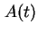 นิยามเป็น ความน่าจะเป็นของระบบที่จะทำงานตามหน้าที่ที่เวลา  จากนิยามดังกล่าวค่าความน่าจะเป็นสามารถประมาณได้จาก เวลาทั้งหมดที่ระบบทำงาน หารด้วยเวลาทั้งหมดตั้งแต่เริ่ม หรืออีกนัยหนึ่ง ความสามารถในการคงการบริการ คือเปอร์เซนต์ของเวลาที่ระบบคงการบริการตามฟังก์ชั่นที่ถูกต้อง
สมมุติว่าเราให้ระบบทำงานอย่างถูกต้องที่เวลา
จากนิยามดังกล่าวค่าความน่าจะเป็นสามารถประมาณได้จาก เวลาทั้งหมดที่ระบบทำงาน หารด้วยเวลาทั้งหมดตั้งแต่เริ่ม หรืออีกนัยหนึ่ง ความสามารถในการคงการบริการ คือเปอร์เซนต์ของเวลาที่ระบบคงการบริการตามฟังก์ชั่นที่ถูกต้อง
สมมุติว่าเราให้ระบบทำงานอย่างถูกต้องที่เวลา  เมื่อเวลาผ่านไป ระบบทำงานตามหน้าที่ หรือ อาจเสียหาย และได้รับการซ่อม ที่เวลา
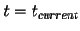 สมมุติให้เวลาที่ระบบทำงานอย่างถูกต้องรวมทั้งสิ้น 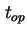 และเวลาที่ระบบซ่อมหรืออยู่ในระหว่างรอซ่อมเท่ากับ 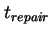 ดังนั้น 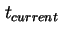 จะมีค่าเท่ากับผลรวมของ และ ความสามารถในการคงการบริการ สามารถหาได้จาก
เมื่อเวลาผ่านไป ระบบทำงานตามหน้าที่ หรือ อาจเสียหาย และได้รับการซ่อม ที่เวลา
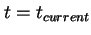 สมมุติให้เวลาที่ระบบทำงานอย่างถูกต้องรวมทั้งสิ้น 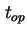 และเวลาที่ระบบซ่อมหรืออยู่ในระหว่างรอซ่อมเท่ากับ 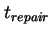 ดังนั้น 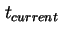 จะมีค่าเท่ากับผลรวมของ และ ความสามารถในการคงการบริการ สามารถหาได้จาก
เมื่อคือ
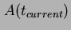 ความสามารถในการคงการบริการที่เวลา
จากสมการขั้นต้น เราสามารถหาค่าความสามารถในการคงการบริการได้จากการทดลองวัดค่าจากระบบ โดยทดสอบใช้งานระบบจริง และบันทึกเหตุการณ์ที่มีการเสียหาย และเวลาที่ใช้ในการซ่อม อย่างไรก็ตามวิธีการดังกล่าวต้องใช้เวลาและค่าใช้จ่าย สิ่งที่เราต้องการคือ วิธีการประมาณค่าความสามารถในการคงการบริการก่อนการสร้างระบบจริง โดยสามารถประมาณค่าได้สองวิธี (1) ได้แก่วิธีการใช้ค่า  และ
และ  ในการคำนวณ และ (2) วิธีการใช้แบบจำลองมาร์คอฟ ที่ใช้อัตราการเสียหาย และอัตราการซ่อมบำรุง ในการคำนวณหาค่าความสามารถในการคงการบริการ ในฟังก์ชั่นของเวลา
เราได้เป็นมาแล้วว่าความสามารถในการคงการบริการ เป็นเปอร์เซนต์ของเวลาที่ระบบยังคงทำงานได้ จากนิยามของ และ , คือค่าเวลาที่ระบบทำงานอย่างถูกต้องก่อนการเสียหายครั้งแรก เมื่อระบบไม่สามารถทำงานได้ การซ่อมจะใช้เวลาโดยเฉลี่ย ในการทำการซ่อม จากนั้นระบบจะเริ่มทำงานอีกครั้งหนึ่งตามรูป 13.4
ในการคำนวณ และ (2) วิธีการใช้แบบจำลองมาร์คอฟ ที่ใช้อัตราการเสียหาย และอัตราการซ่อมบำรุง ในการคำนวณหาค่าความสามารถในการคงการบริการ ในฟังก์ชั่นของเวลา
เราได้เป็นมาแล้วว่าความสามารถในการคงการบริการ เป็นเปอร์เซนต์ของเวลาที่ระบบยังคงทำงานได้ จากนิยามของ และ , คือค่าเวลาที่ระบบทำงานอย่างถูกต้องก่อนการเสียหายครั้งแรก เมื่อระบบไม่สามารถทำงานได้ การซ่อมจะใช้เวลาโดยเฉลี่ย ในการทำการซ่อม จากนั้นระบบจะเริ่มทำงานอีกครั้งหนึ่งตามรูป 13.4
Figure 13.4:
ค่า และ
|
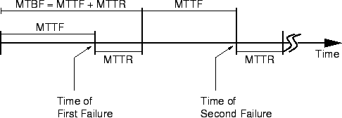
|
ถ้าโดยเฉลี่ยพบว่าระบบมีการเสียหาย  ครั้งในช่วงอายุการใช้งาน เวลาโดยรวมที่ระบบสามารถใช้งานได้เท่ากับ 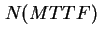 ชั่วโมง หรืออีกนัยหนึ่งเวลาใช้งาน เท่ากับ และเวลาที่ไม่สามารถบริการได้ (Down-Time) สามารถแสดงได้โดย 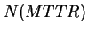 จากค่าดังกล่าว ค่าความสามารถในการคงการบริการที่เวลาคงตัวเท่ากับ
ครั้งในช่วงอายุการใช้งาน เวลาโดยรวมที่ระบบสามารถใช้งานได้เท่ากับ 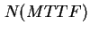 ชั่วโมง หรืออีกนัยหนึ่งเวลาใช้งาน เท่ากับ และเวลาที่ไม่สามารถบริการได้ (Down-Time) สามารถแสดงได้โดย 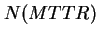 จากค่าดังกล่าว ค่าความสามารถในการคงการบริการที่เวลาคงตัวเท่ากับ
ในระบบ Simplex ค่า และ ขึ้นอยู่กับค่าอัตราการเสียหายและอัตราการซ่อมบำรุงตามลำดับ ซึ่งเท่ากับ
ดังนั้น ค่าความสามารถในการคงการบริการที่เวลาคงตัวสามารถแสดงได้โดย
ค่าอัตราเฉลี่ยของการซ่อม  มีหน่วยเป็น ``จำนวนการซ่อมต่อชั่วโมง'' ในขณะที่ค่าอัตราความเสียหาย
มีหน่วยเป็น ``จำนวนการซ่อมต่อชั่วโมง'' ในขณะที่ค่าอัตราความเสียหาย  มีหน่วยเป็น ``จำนวนการเสียหายต่อชั่วโมง'' ถ้าค่า เข้าสู่ศูนย์หมายถึงระบบจะไม่มีการเสียหาย และถ้าค่า มีค่าเข้าสู่อนันต์ระบบจะไม่ต้องใช้เวลาในการซ่อม และค่าความสามารถในการคงการบริการจะมีค่าเข้าสู่ 1
มีหน่วยเป็น ``จำนวนการเสียหายต่อชั่วโมง'' ถ้าค่า เข้าสู่ศูนย์หมายถึงระบบจะไม่มีการเสียหาย และถ้าค่า มีค่าเข้าสู่อนันต์ระบบจะไม่ต้องใช้เวลาในการซ่อม และค่าความสามารถในการคงการบริการจะมีค่าเข้าสู่ 1
Subsections
Vara Varavithya
2002-03-09